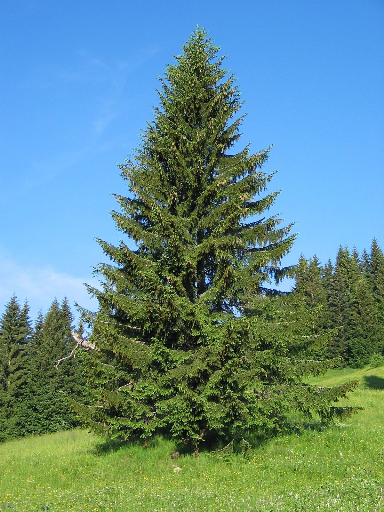
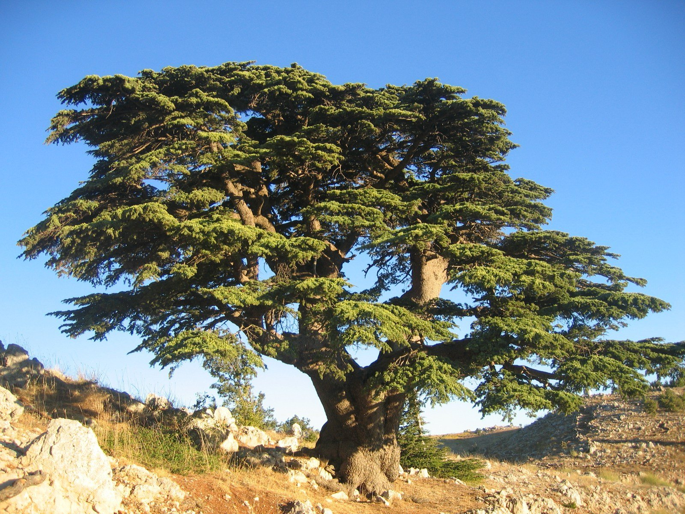
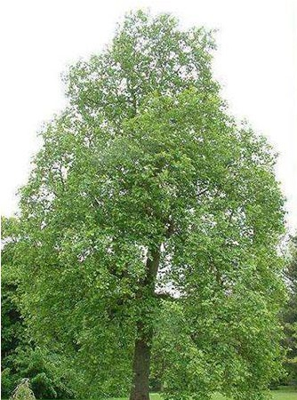

Ель – высокорослое дерево, может превышать 30 метров в высоту. Средняя длительность жизни елки составляет около 500 лет. Прочность древесины и высокая теплоотдача елки позволяет применять растение в промышленных целях.
Кедр – однодомное вечнозеленое дерево может вырасти до 30-40 м (иногда до 60 м) в высоту, смолистый ствол с толстой чешуйчатой в трещинах темно-серой корой, которая обладает пикантно-пряным запахом.
Осина крупное дерево до 35 м высотой и 1 м в диаметре. Кора у нее сперва гладкая серо-зеленая, затем трещиноватая темно-серая. Листья ее округлые, кожистые, городчатые.Ель | Кедр | Осина |
|  |  |  |